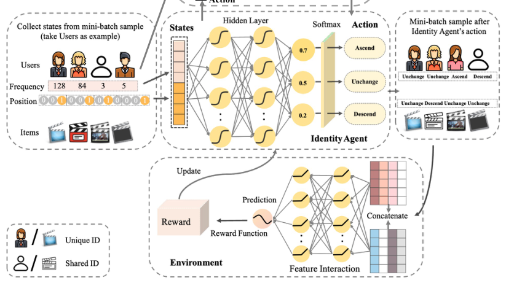

AutoAssign+: Automatic Shared Embedding Assignment in Streaming Recommendation (流式推荐中的自动共享嵌入分配)
- 会议/期刊: Knowledge and Information Systems (KAIS) 2023（ICDM 2022 前作 AutoAssign 的期刊扩展版）
- 作者与机构: Ziru Liu, Kecheng Chen, Fengyi Song, Xiangyu Zhao (CityU HK)；Bo Chen, Huifeng Guo, Ruiming Tang (华为诺亚方舟实验室)
- 推荐链路定位: 嵌入层插件（与推理层解耦，可挂载于召回双塔或精排 DNN 的 embedding lookup 之前）
- 研究方向: 冷启动与长尾推荐 / 强化学习与动态探索推荐
- 论文原文: https://arxiv.org/abs/2308.06965v1
- 开源代码: https://github.com/Applied-Machine-Learning-Lab/AutoAssign-Plus
TL;DR (1分钟核心速览)
流式推荐中新用户/新物品及长尾 ID 的随机初始化既欠训练又不断膨胀嵌入表。AutoAssign+ 把"低频 ID 应当使用共享嵌入还是独有嵌入"建模为马尔可夫决策过程，由 Identity Agent（actor）在含 \(k\) 个层级共享嵌入的候选组上输出 Ascend/Unchanged/Descend 三种动作，并用 Critic 网络的 TD 误差反传优化策略。在三个数据集上按全局时间戳 80/20 流式划分、pointwise 二分类评估，Accuracy 相对 Origin 平均 +3.85%，Netflix AUC 由 0.7640 升至 0.8093（+5.93%），嵌入层参数下降 20–31%。
Background & Motivation (背景与核心矛盾)
- 主流范式: 深度推荐遵循 "Embedding & Feature Interaction" 范式；工业界处理低频 ID 的惯用手法是 Low-Frequency Filter (LFF)——设固定频次阈值 \(\tau\)，低于阈值的 ID 一律映射到同一个共享嵌入。
- 前人局限一（阈值僵化）: \(\tau\) 依赖专家经验或昂贵网格搜索，而不同 ID 域（user/item）的频率分布在时空上持续漂移，固定阈值必然次优；且单一共享嵌入把所有低频 ID 压成同一点，造成严重偏差。
- 前人局限二（初始化副作用）: MetaEmb / MWUF 等元学习方案靠辅助特征（社交图、图像）或全体嵌入均值来初始化新 ID，既依赖 ID-only 场景下拿不到的侧信息，又会通过全局参数污染高频 ID 的嵌入。
- 核心洞察 (Key Insight): 前作 AutoAssign 的 agent 只依据「输入频次 + 当前位置」生成候选嵌入，完全看不到推荐模型自身的预测表现，策略与最终目标脱耦；因此需要引入一个 critic 来评估"这次分配究竟让模型变好还是变坏"。
- 本文切入点: 用层级共享嵌入组 + 可升可降的位置回退机制替代固定阈值，用 actor-critic 让"分配决策"直接对齐预测损失的下降。
Method (核心方法设计)
1. 整体框架 (Overall Architecture)
数据以 (userID, itemID, label) 流式到达。每个 ID 携带状态 \((\text{F}(\cdot), p)\)，Identity Agent 输出三动作之一，把该 ID 重定向到层级共享嵌入组\(\{S_1,\dots,S_k\}\)的某一层，或提升到第\(k+1\)层的独有 ID。重定向后的 ID 经 embedding lookup、特征交互层得到\(\hat{y}\)，与真值算 MSE。同时 Critic 网络以 (user-item 特征, 动作, reward) 估计 Q 值并算 TD 误差，先训 critic 至收敛、再用 Q 值梯度更新 agent，最后用调整后的样本更新推荐模型，三者交替迭代。
flowchart TD
A["流式样本 (userID, itemID, label)"] --> B["Identity Agent: state=(F, p) → MLP+Softmax"]
B --> C["动作 Ascend / Unchanged / Descend"]
C --> D["层级共享嵌入组 {S1..Sk} 或第 k+1 层独有 ID"]
D --> E["Embedding Layer → 特征交互 → ŷ"]
E --> F["MSE 损失 / 奖励 R"]
F --> G["Critic 网络 Q(s,a) + TD 误差"]
G --> B
2. 关键设计拆解 (Key Designs)
- 层级共享嵌入组与位置回退（替代固定阈值）：痛点是把所有低频 ID 塞进一个共享点导致偏差。做法是把共享嵌入做成有序的 \(k\)层缓冲（实测 user 侧\(k=1\)、item 侧\(k=2\)），动作空间为升/不变/降：频次累积则从\(p_i\)升到\(p_{i+1}\)，热度衰退则降回低层。核心转移规则为 \(p_i \leftarrow \begin{cases} p_i+1, & a=\text{Ascend}\\ p_i, & a=\text{Unchanged}\\ p_i-1, & a=\text{Descend}\end{cases}\)当\(p_i\)越过\(k\)进入\(k+1\)时获得独有 ID，并用最后一层共享嵌入\(\boldsymbol{e}_{s_k}\) 初始化——共享嵌入已被大量低频 ID 训练得足够"泛化"，是天然的 warm start；反向降级则回收参数、并让长期不活跃后重新活跃的 ID 复活。直觉上这相当于给 embedding table 加了一层"可回滚的缓存层级"。
- Critic 网络与损失差奖励（把决策对齐到模型收益）：前作 agent 的决策缺少反馈信号。本文定义奖励为当前预测损失相对过去 \(T=30\) 天平均损失的下降量 \(R_u=\frac{1}{T}\sum_{t=1}^{T}L_t^{u}-L,\qquad R_i=\frac{1}{T}\sum_{t=1}^{T}L_t^{i}-L\)用滑动窗口而非单点损失是为了抑制流式数据的噪声抖动。Critic 采用 shared-bottom 结构同时编码 user-item 特征与动作，\(Q(s,a;\phi)=R+\gamma Q(s',a';\phi)\)（\(\gamma=0.95\)），并配 target network 软更新\(\tilde{\phi}=\beta\tilde{\phi}+(1-\beta)\phi\)（\(\beta=0.2\)）以缓解 actor-critic 不收敛问题。
- 训练目标、更新次序与推理开销：推荐模型侧为 pointwise 二分类 MSE \(\mathcal{L}=\frac{1}{N}\sum_j(y_j-\hat{y}_j)^2\)，无需负采样（二分类而非 pairwise 排序）。更新次序严格为 critic（TD 误差）→ agent（\(J(\Omega)=-\frac{1}{b}\sum_k Q'(s,\Omega(a|s))\)梯度，收敛后改用 Monte-Carlo 策略梯度\(\nabla_\Omega F\approx\frac{1}{N}\sum_i R(a|s)\nabla\log\Omega(a|s)\)）→ 推荐模型。推理阶段 agent 只做一次 O(1) 的 ID 表映射重定向，不进入前向计算图，线上延迟增量可忽略；代价在训练侧，总耗时为 Origin 的约 3.4 倍。
Experimental Setup & Evaluation Protocol (实验设置与评估协议)
- 数据集与预处理: 不做
5-core过滤，保留全部长尾以暴露冷启动；评分 >3 记为正例，≤3 记为负例。
| 数据集 | #Users | #Items | #Interactions | 稀疏度/密度 | 特征/场景说明 |
|---|---|---|---|---|---|
| MovieLens Latest | 280,000 | 58,000 | 27,000,000 | 0.16% | 极稀疏，最贴近冷启动压力测试 |
| MovieLens 25M | 162,000 | 62,000 | 25,000,000 | 0.25% | 稳定基准，含百万级 tag |
| Netflix Prize | 480,000 | 17,000 | 100,000,000 | 1.22% | 1998-10 至 2005-12，长时序漂移最强 |
- 数据划分与防穿越 (Splitting Strategy): 全局时间戳切分——按时间排序后取前 80% 训练、后 20% 测试，且只跑 1 个 epoch、不打乱、测试期继续在线更新模型，模拟真实流式不可回溯场景。
- 排名评测协议 (Ranking Protocol): 非 ranking 协议。采用 pointwise 二分类指标 MSE / Accuracy / AUC，未做 Full-Ranking 也未做 Sampled Ranking，这是本文评估的关键局限（见末节）。
- 对比基线与超参设置: 基线为 Origin（不做任何过滤）、LFF-Grid（\(\tau\in[5,200]\)步长 10）、LFF-Random（\(\tau\in[5,20]\)随机搜索最优组合）、AutoAssign（无 critic 版本）。嵌入维度\(d=128\)，特征交互两层 512 + LeakyReLU，agent 单隐层 512、频次嵌入 32，Adam（agent 1e-4 / 推荐模型 1e-3），batch 500，显著性\(p<0.05\)。
Key Experimental Results (实验关键数据)
1. 主实验对比 (Main Results)
| 数据集 | 模型 | MSE↓ | Accuracy↑ | AUC↑ | 训练耗时(min) | Improv.(Acc) |
|---|---|---|---|---|---|---|
| ML-25M | Origin | 0.2155 | 0.6578 | 0.7105 | 10 | — |
| ML-25M | LFF-Grid | 0.2079 | 0.6747 | 0.7314 | 110 | 2.56% |
| ML-25M | LFF-Random | 0.2074 | 0.6754 | 0.7322 | 231 | 2.67% |
| ML-25M | AutoAssign | 0.2052 | 0.6792 | 0.7364 | 18 | 3.25% |
| ML-25M | AutoAssign+ | 0.2046 | 0.6817 | 0.7386 | 39 | 3.63% |
| ML-Latest | Origin | 0.2157 | 0.6567 | 0.7108 | 12 | — |
| ML-Latest | LFF-Random | 0.2073 | 0.6756 | 0.7328 | 294 | 2.87% |
| ML-Latest | AutoAssign | 0.2050 | 0.6802 | 0.7377 | 20 | 3.56% |
| ML-Latest | AutoAssign+ | 0.2040 | 0.6821 | 0.7422 | 41 | 3.87% |
| Netflix | Origin | 0.1914 | 0.7062 | 0.7640 | 26 | — |
| Netflix | LFF-Random | 0.1818 | 0.7235 | 0.7883 | 588 | 2.45% |
| Netflix | AutoAssign | 0.1792 | 0.7293 | 0.7946 | 45 | 3.27% |
| Netflix | AutoAssign+ | 0.1756 | 0.7349 | 0.8093 | 87 | 4.06% |
2. 消融实验 (Ablation Study)
（MovieLens Latest，均基于 AutoAssign 骨架拆解）
| 变体 | MSE↓ | Accuracy↑ | Improv. |
|---|---|---|---|
| Origin | 0.2155 | 0.6578 | — |
| AutoAssign (No Descend) | 0.2059 | 0.6785 | 3.15% |
| AutoAssign (Single SE) | 0.2056 | 0.6793 | 3.26% |
| AutoAssign (Single SE + No Descend) | 0.2082 | 0.6732 | 2.34% |
| AutoAssign | 0.2052 | 0.6801 | 3.40% |
| AutoAssign+ (完整) | 0.2047 | 0.6819 | 3.66% |
嵌入层参数削减：ML-Latest 用户侧 35.84M→25.55M（−28.7%）、电影侧 −43.9%，合计 −31.3%；ML-25M 合计 −23.1%。
3. 关键实验发现 (Key Findings)
- 数据越稠密、时序越长，动态回收的收益越大：Accuracy 相对提升从 ML-25M 的 3.63% 升至 Netflix 的 4.06%，AUC 绝对提升从 0.028 扩到 0.045——Netflix 跨 7 年、密度 1.22%，"活跃→沉寂→复活"的 ID 回退场景最丰富，正对应 Descend 动作的价值。
- 层级组与 Descend 是耦合的必要条件，缺一即退化到 LFF 水平：单去 Descend（3.15%）或单去层级组（3.26%）仍优于 LFF（≈2.67%），但两者同时去掉跌至 2.34%，低于 LFF——说明单向 + 单共享嵌入的 agent 会做出与固定阈值同样武断的判定，二者必须同时存在。
- critic 的边际贡献稳定但幅度有限：AutoAssign→AutoAssign+ 在三个数据集上 Accuracy 分别 +0.25/+0.19/+0.56 个百分点（AUC +0.22/+0.45/+1.47），是"锦上添花"而非"从 0 到 1"；真正的增益来自层级共享嵌入机制本身（Origin→AutoAssign 已占 3.2~3.3%）。同时 AutoAssign+ 训练 39 min，仅为 LFF-Grid 的 1/3、LFF-Random 的 1/6，把"人工调阈值"的搜索成本彻底省掉。
Highlights & Limitations (亮点、对比与审稿批判)
- 与代表作对比: 相比 LFF，本文把"固定阈值 + 单一共享嵌入"换成"可学习阈值 + 层级共享嵌入 + 可回退"，无需专家调参且能捕捉分布漂移；相比 MetaEmb/MWUF，它不依赖任何辅助侧信息，也不通过全局参数污染高频 ID；相比前作 AutoAssign，它用 critic 把分配策略显式对齐到推荐损失，而非仅凭频次启发式。
- 可迁移亮点: (i) "层级共享嵌入 + 位置回退"是一套模型无关的 embedding table 参数回收器，可直接加在双塔召回或精排 DNN 的 lookup 之前做在线显存治理；(ii) 用「当前损失 − 过去 \(T\) 步损失滑动均值」作为 reward 的塑形技巧，可复用到任何需要把训练信号转成 RL 奖励的推荐场景。
- 审稿级局限批判: (i) 评估协议偏弱——只报 MSE/Accuracy/AUC，没有 Full-Ranking 的 Recall@K/NDCG@K，冷启动结论在真实排序链路上尚未验证；(ii) 训练开销与超参敏感——训练耗时约 Origin 的 3.4 倍，且 \(T=30\)、\(\gamma=0.95\)、\(\beta=0.2\) 三个超参未做敏感性分析，critic 需先收敛才更新 agent，在高速流式场景下可能跟不上数据流速；(iii) 单 epoch、不打乱的流式设置使结果无法与常规多次迭代训练的强基线（如 SASRec/LightGCN）横向比较；(iv) 作者自承动作语义不透明、可解释性差。
Rating (四维评分)
- 方法创新性 (Novelty): ⭐⭐⭐⭐ （把"低频 ID 分配"显式建模为带可回退动作的 MDP 并用 critic 闭环，视角新颖；但相对前作 AutoAssign 的核心增量主要是 critic，属稳健的增量式创新）
- 评估协议与实验扎实度 (Protocol & Experiments): ⭐⭐⭐ （三数据集 + 时间戳流式切分 + \(p<0.05\) 显著性 + 消融与参数统计完整，但缺失 ranking 指标与强序列基线，"冷启动"结论的说服力被削弱）
- 写作与数学规范度 (Clarity & Rigor): ⭐⭐⭐ （MDP 三要素与更新次序交代清楚、算法伪代码完整，但公式编号与符号存在笔误（如式 16 的 \(F(\Omega)\)定义含糊、\(\mathcal{I}\) 未定义即用于梯度式），部分超参设置描述前后不一致）
- 工业落地与复现价值 (Industrial & Practical Value): ⭐⭐⭐⭐ （代码已开源、框架与推理层解耦即插即用、20–31% 嵌入表显存节省与 3.4× 训练开销对工业流式系统是可接受的权衡，落地路径清晰）